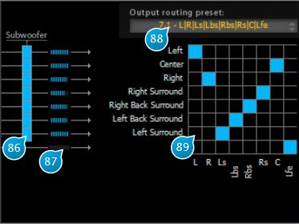

16 Routing

16.1 (86) Subwoofer On
Activates send of a speaker output to the subwoofer bus.
16.2 (87) Output level meter
Output peak level meter.
16.3 (88) Output routing preset
Gives quick access to commonly used output mappings.
16.4 (89) Output routing
Here you can map any Spat speaker output to a “physical” output. The plugin always ensures there is a one-to-one correspondence between Spats internal outputs and the plugin output channels, and remaps channels automatically when necessary.